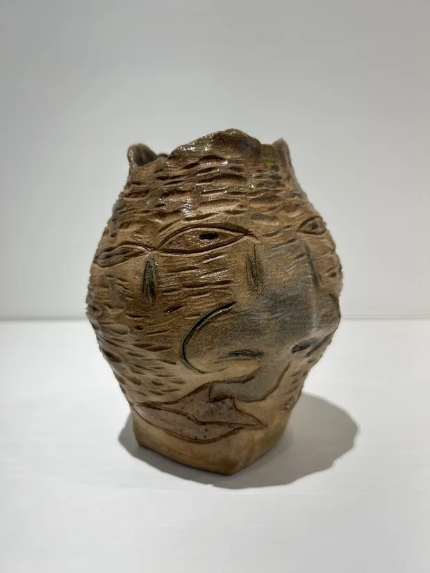

早期生成 Early Generation
宇宙的種子，往往比自己想像得更早出現 The seeds of the universe often appear earlier than one imagines.
在陶土與線條之間，生成自己的宇宙 Generating my own universe between clay and line
藍色眼睛、橘紅色嘴巴與深灰裂縫，在黑色星空裡形成又禎的宇宙核心。 The blue eye, ember mouth, and charcoal rift form the core of Yuzen Universe in a dark field of stars.
01 / 關於我 About
我以陶土、線條與裂縫作為創作語彙，讓潛伏於世界中的生命慢慢顯影。眼睛、嘴巴、圓形與流動的邊界經常出現在作品裡，形成一個持續生成中的生命宇宙。
每一件作品都像一顆小星體，記錄觀看、觸摸與想像留下的痕跡。
I use clay, line, and rift as a visual language, allowing the life hidden within the world to slowly appear. Eyes, mouths, circles, and flowing edges often emerge in the work, forming a living universe that continues to generate itself.
Each piece becomes a small celestial body, holding traces of looking, touch, and imagination.
創作者 Creator
畢業於國立清華大學藝術與設計學系研究所。
從事室內設計三十餘年，持續投入陶藝、繪畫、木雕與多媒材創作。
近年以「Yuzen Universe」為創作主軸，透過裂縫、殘片、石紋與人格生成，探索萬物有靈與生命顯影的可能。
02 / 裂縫 Rift
我相信生命往往從裂縫開始顯現 I believe life often begins to appear through cracks.

世界本來就是活的。
我經常在石頭、樹木、海岸、舊牆與時間留下的痕跡裡，看見潛伏的生命。那些生命往往不是完整出現，而是透過裂縫、紋理與風化的痕跡慢慢顯影。
創作對我而言，不是創造，而是回應。
我只是將那些被看見的生命，輕輕記錄下來。
The world is alive by nature. I often see hidden life in stones, trees, coastlines, old walls, and the traces left by time. That life rarely appears whole; it slowly reveals itself through cracks, textures, and weathered marks. For me, creation is not invention, but response. I simply record the lives that have been seen, gently.
03 / 軌道 Orbit
宇宙並非一次形成，而是在不同軌道中持續生成 The universe is not formed all at once; it keeps generating itself across different orbits.
在石頭、樹木與裂縫之中，看見潛伏的生命 Seeing hidden life within stones, trees, and cracks.
當線條開始流動，生命便悄悄顯現 When lines begin to flow, life quietly appears.
從殘片、裂縫與時間之中，重新甦醒的文明 A civilization reawakening from fragments, cracks, and time.
讓生命以器物的形式，進入日常與陪伴 Let life enter daily companionship through the form of vessels.

有些生命選擇成為器皿，靜靜陪伴日常 Some lives choose to become vessels, quietly accompanying the everyday.
進入 Enter讓牆面、柱子與空間開始呼吸 Let walls, columns, and space begin to breathe.
04 / 檔案 Archive
那些曾經留下痕跡的相遇，仍在這裡慢慢發光。
Encounters that once left traces still glow here slowly.
宇宙的種子，往往比自己想像得更早出現 The seeds of the universe often appear earlier than one imagines.
在成為藝術家之前，生命已經悄悄長進空間裡 Before becoming an artist, life had already grown quietly into space.
旅行不是離開，而是重新看見 Travel is not leaving, but seeing again.
創作從未停止，只是以不同的形式生長 Creation never stops; it simply grows in different forms.
05 / 聯絡 Contact
展覽邀約 / 作品收藏 / 空間合作 / 訪談聯繫 Exhibitions / Collecting / Spatial collaboration / Interviews